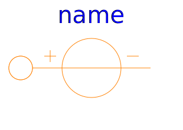
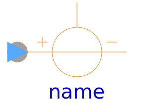
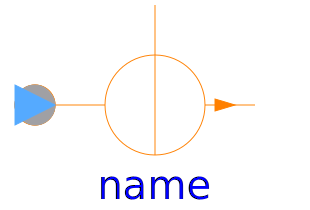

This package provides sources of magnetic potential difference and magnetic flux.
| Name | Description |
|---|---|
|  ConstantMagneticPotentialDifference | Source with constant magnetic potential difference |
|  SignalMagneticPotentialDifference | Source of magnetic potential difference with signal input |
| Source of constant magnetic flux | |
|  SignalFlux | Source of time varying magnetic flux |